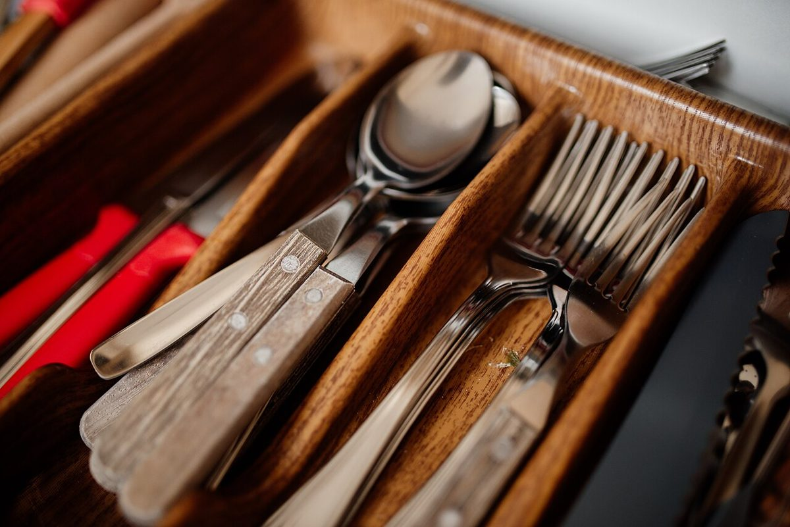
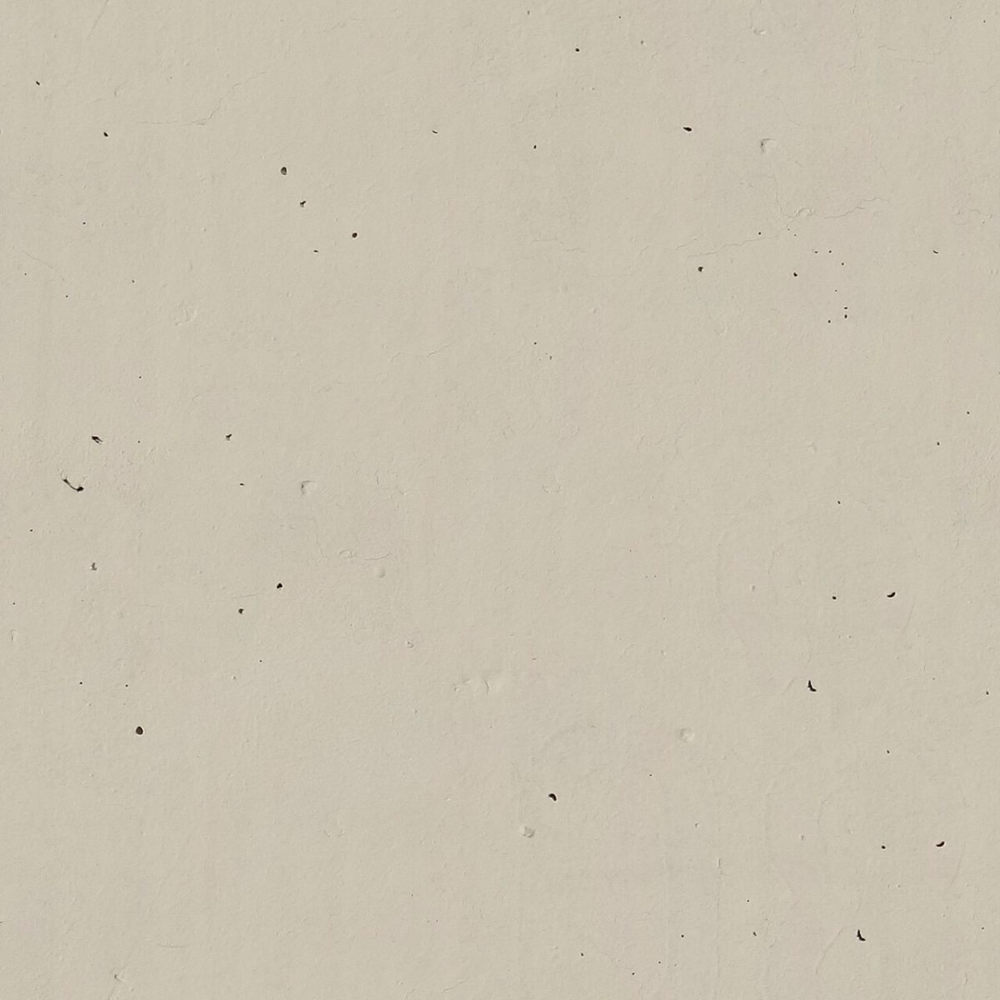
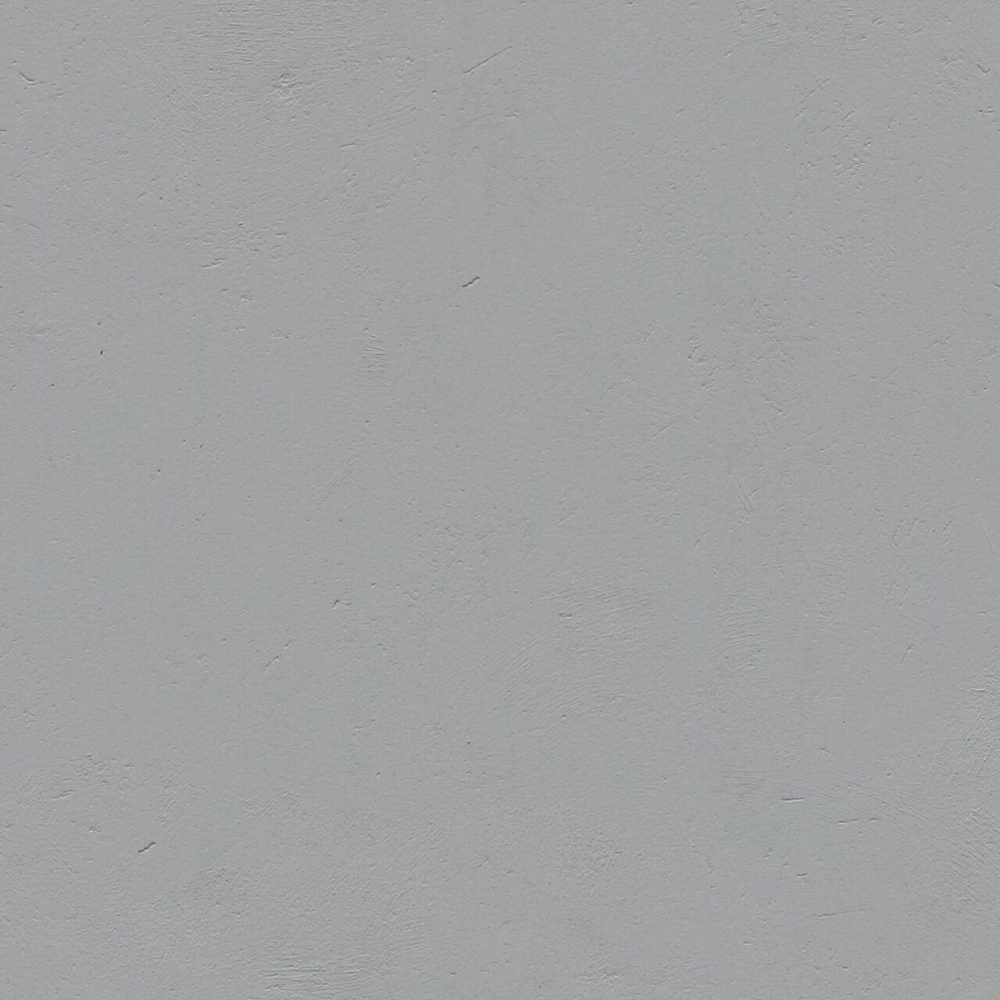
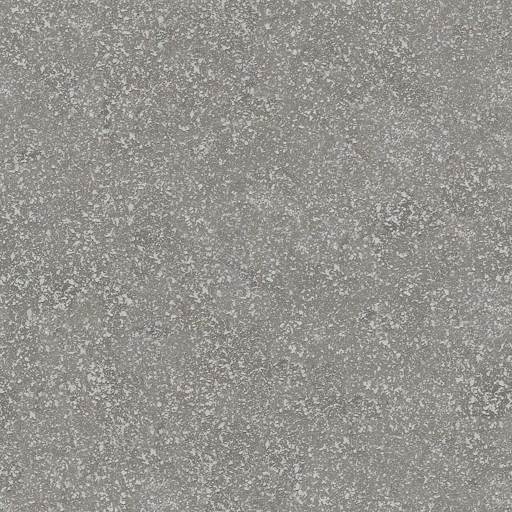

420 × 594 mm
店のこと
お店について確認できているのは、所在地・電話・Instagramのアカウントです。
このページの「想像してみる」部分は、制作側が想像して書いたものです。お店の実際の様子・考え・メニューとは関係がありません。
確認できていること
- 店名は「Astep」、業種はカフェ
- 所在地は佐賀県唐津市浜玉町横田上699-5(〒849-5121)
- 電話は 080-4407-1015
- Instagramのアカウントがある
まだ分からないこと
- 営業時間・定休日
- メニュー・価格
- ご予約・駐車場

想像してみる
白い紙のような、まだ何も書かれていないところ
お店のことは、いまはまだ白い紙に近い状態です。そこで制作側は、紙の色見本のように、4つの質感を並べてみました。お店の内装や商品とは関係のない、制作側の連想です。




どの質感も、撮影地不明のフリー素材のイメージです。
切り方のきまり
半分に切っても、形は変わらない
A判は、長いほうの辺をちょうど半分に切ると、できた紙も元の紙と同じ縦横比(1 : √2)になるよう決められています。だから A0 から A5 まで、同じ形のまま大きさだけが変わります。
このサイトでは、ホームを A1、このページを A2 として、ページが進むごとに紙が半分になる作りにしています。